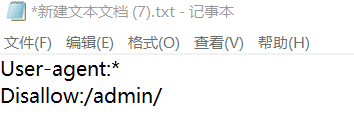

敏感信息泄露/源码泄露 学习笔记
1.什么是敏感数据？
敏感数据包括但不限于：口令、密钥、证书、会话标识、Licence、隐私数据、授权凭据、个人数据等、在程序文件、配置文件、日志文件、备份文件及数据库中都有可能包含敏感数据。
1、.git文件泄露漏洞
漏洞描述：git在初始化项目的时候，会在项目的根目录（git rev-parse –show-toplevel查看）创建一个名为.git的隐藏文件夹，里面包含了本地所有commit的历史纪录，如果无意间将这个目录置于Web的路径下让用户可以访问，那么也就泄露了几乎所有的源代码和其他的敏感信息。可能泄露的内容：
- 所有该项目的源码
- 私有仓库的地址
- 私密的配置信息。
- 所有commiter的邮箱账号信息
- 内部的账号和密码。。
检测方式： 工具：GitHack 使用方法：
python GitHack.py http://网站地址/.git/
示例：来源(i春秋web Hello world);
进入题目，查看源码，只发现一个js文件
我们尝试使用Githack来判断网站是否有.git泄露。

可见该网站下存在.git泄露，并且在工具文件夹下得到了泄露的文件内容。
2、.hg源码泄露漏洞
漏洞描述：Mercurial的意思是水银, 所以缩写成hg(汞), 也是一个版本管理软件. 用法和git有点类似, 但也保留了svn命令简明的特点, 而且原生地支持Windows/MacOS/Linux三大平台, 不像git需要MinGW才得以运行, 所以当今也有不少人偏向于用hg做版本控制.
检测方式：工具dvcs-ripper,使用方法：rip-hg.pl -v -u http://域名/.hg/
3、DS_Store源码泄露漏洞
漏洞描述：在发布代码时，没有删除文件夹中隐藏的.DS_store，被发现后，获取了敏感的文件名等信息，http://www.xxx.com/.ds_store
检测方式：dsstoreexp,使用方式：python ds_store_exp.py http://域名/.Ds.store
4、robots导致文件泄露
漏洞描述：搜索引擎可以通过robots文件获知哪些页面可以爬取，哪些页面不可以爬取。Robots协议是网站国际互联网通行的道德规范。其目的是保护网站数据和明杆信息 、确保用户个人信息和隐私不被侵犯，如果robots.txt文件太过详细，反而会泄露网站的敏感目录或者文件，比如网站后台路径，从而得知其使用的系统类型，从而有针对性地进行利用。
检测方式：1.我们可以直接使用御剑进行后台扫描，或者直接用爬虫进行爬取，从而找到robots.txt文件。
2.直接在网站URL输入/robots.txt进行查看。
修复方案：为了不让robots.txt中的内容不泄露网站的后台和隐私，我们可以使用星号（*）作为通配符进行设置。例如限制访问我们的后台admin目录，则规则为：

当我们又不想泄露我们的敏感目录时，我们可以使用星号(*)作为通配符即可。
5、备份文件泄露漏洞
漏洞描述：备份文件泄露又分为两种情况, 一种是运维人员偷懒地直接在网站根目录用类似tar -czvf bakup.tgz的命令将网站进行备份,
这样整站的源代码都能直接被用户打包下载了； 另一种是开发或者运维人员使用的编辑器修改文件时自动备份了所编辑的网页内容,
如vim的.swp, 从而泄露了该网页的源代码。
检测方式：常见的备份文件后缀名：直接在URL中进行检测。
1 | *.rar *.zip *.7z *.tar.gz *.bak *.swp *.txt *.html |
或者使用工具比如AWVS进行扫描。
修复方案：做好版本管理, 并利用版本管理工具过滤掉这些类型的文件, 同时不要直接在生产环境中修改或者添加文件
6、phpinfo(）信息泄露漏洞
漏洞描述：Web站点的某些测试页面可能会使用到PHP的phpinfo()函数，会输出服务器的关键信息。
检测方式 ：访问http://ip/phpinfo.php看是否成功。
修复方案 ：删除该PHP文件。
7、SVN文件泄露漏洞
漏洞描述：Subversion，简称SVN，是一个开放源代码的版本控制系统，相对于的RCS、CVS，采用了分支管理系统，它的设计目标就是取代CVS。互联网上越来越多的控制服务从CVS转移到Subversion。
漏洞检测：
1.漏洞利用工具： Seay SVN漏洞利用工具
2、添加网站url
在被利用的网址后面加 /.svn/entries，列出网站目录，甚至下载整站。
漏洞修复
1.不要使用svn checkout和svn up更新服务器上的代码，使用svn export（导出）功能代替。
2.服务器软件（Nginx、apache、tomcat、IIS等）设置目录权限，禁止访问.svn目录
参考文章
https://ninjia.gitbook.io/secskill/web/info